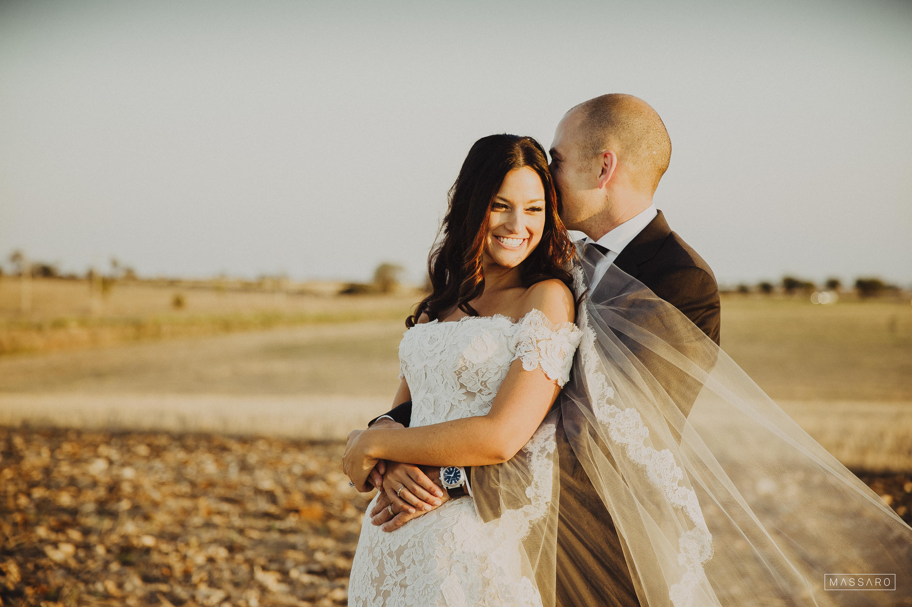
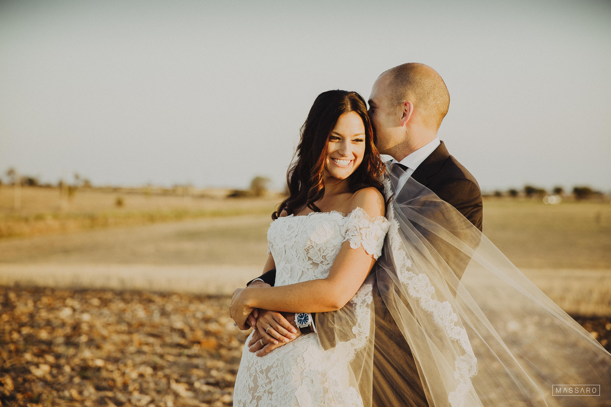

Testimonials
Kevin learned Italian before his destination wedding in Italy and created a storybook ceremony worthy of movies!
Read full story
Jerry has studied with Leona for over 2 years, developing a close friendship and even attending her wedding.
Read full story
Jessica wanted the ability to speak with her Italian grandmother. Now she and her nonna talk on a regular basis.
Read full story
Bradley wanted to talk viticulture with Italian winemakers. Now with his own wine company, he is on the path to Italian citizenship.
Read full story
Mike wanted to retire to Italy. Now he speaks Italian fluently and runs a Culinary Vacation Program in the Roman countryside.
Read full story
Ray and Monica want to talk to locals when they visit Italy. Their couples lessons exemplify a marriage committed to exploring the world together.
Read full story
Toni and her daughter Lauren needed a crash course in Italian language, customs, and points of interest before attending a destination wedding in Rome.
Read full story
 

"Around April of 2015, I decided once and for all I was going to learn to speak Italian. In large part because my wife-to-be and I were planning our upcoming wedding in Italy. I had already tried learning on my own with books, apps, and Rosetta Stone but hadn’t seen much progress, and I would have been setting myself up for embarrassment if I told an Italian speaker, “I speak Italian.” By that point I knew, short of moving to Italy, the only way I was ever going to really learn Italian was through lessons with an Italian speaker. That’s when I met Leona.
I was lucky to find her because she is a wonderful teacher! We began meeting one-on-one, twice a week. She assessed my Italian and tailored each lesson for me. She was always prepared and made sure to provide me challenging new exercises each week, while also going back to cover my weak points from the lesson before. Leona was also always understanding and willing to accommodate my busy weekly schedule. Her flexibility and patience allowed me to stay on track. She also always made our lessons fun, which helped keep me stay committed. Before long, our conversations were almost exclusively in Italian.
By the time our wedding arrived in August of 2016, I was able to carry a conversation in Italian. Sure, there was still a lot more for me to learn, but it was an exciting accomplishment! I had Leona to thank. And it made our wedding trip to Italy even more amazing.
Following our trip, I continued my weekly lessons. By then, Leona and I had become friends, and I looked forward to each meeting. We’re still studying Italian weekly, and I can’t wait till my young son one day starts his own lessons with Leona. Now more than three years after my first lesson, each month that passes brings more excitement as I realize the strides I’m continuing to make with the Italian language, thanks to Leona!"
"I have been taking lessons from Leona for 2 years. Her lessons have a good mix of talking and listening,
vocabulary, dialogue practice and spontaneous conversation thrown in. Recently my wife and our
two friends were in Sicily. The best testimonial I can give Leona was when we attended a cooking
school. The Chef asked our driver if any of us spoke Italian. The driver responded, 'Jerry speaks
Italian.' I felt great. Grazie Mille Leona."
A note from Leona:
"Dr. Jerry has amazed me with his perseverance and commitment to learning the Italian language
throughout the past three years, a testament to making time to learn a new language even after
years of a very busy and successful practice. I am so proud to see him achieve membership in
the Italian Club in Ybor and contribute to their Italian festivals, activities, and events. Thank
you Dr. Jerry for your remarkable success in life, not only as a psychologist but also as a wonderful
student and friend."
"Ciao! So, that's about the only word I knew when I started my Italian lessons. I found Leona about a year and a half ago as I was looking for a teacher to help me finally be able to speak fluently with my Nonna. Leona has a passion for Italian culture and language that is evident the second you meet her. She grew up in Italy and is eager to share her love of the country. In fact, when I told her I was thinking about a destination wedding there, she went above and beyond to recommend places and help me along the way. She is patient, kind, motivating, and is fully invested in her students progress. I can definitely say that I gained an amazing mentor, teacher, and friend!"
"I have always loved Italian language and culture, and I decided to learn the language in advance of a two week trip to Italy. After struggling to use apps like Duolingo and Memrise to improve my speaking abilities, I eventually connected with Leona and began taking lessons from her. Since my trip was focused on the art of winemaking and viticulture, so were our lessons, with an emphasis on ease of communication. The trip was a great experience and I definitely used my newly acquired language skills, although I still have a lot to learn from Leona. Presently I am working to become an Italian citizen and can speak, read, write, and comprehend at a intermediate level, still taking lessons from Leona. She is a great teacher and I recommend her to anyone."
I contacted Leona in 2014, with the hope of learning to speak Italian better. My dream for the near future was to open a business and retire one day in the beautiful land of Italy. Amazingly, that happened!
I made the right choice by committing myself for almost two years to studying Italian, twice a week, with Leona. Her style of teaching was energetic, intense and fun at the same time. She was very flexible with the schedule which helped tremendously with my busy work schedule at the time. She was very excited to help me converse in Italian and was essential in helping me prepare for my present life in Italy. Now I speak Italian fluently and run a Culinary Vacation Program in a large villa in the Roman countryside. It’s the heart of Italy. I enjoy teaching people about the culture, history, and cuisine of Italy, my new home.
Grazie Leona, for helping make my dream come true!
Check out Culinary Vacation Program at http://www.lacucinasabina.com/
"If you are truly serious about learning Italian, you have to reach out to Leona. My wife and I truly love Italy and the Italian culture and we have made it our goal to learn the language so we can interact with the locals when we visit. Since we have different learning styles, Leona has been exceptional in customizing our learning plan so we both get as much as we can out of the studies. In addition, she not only teaches us the language, but she also teaches us the culture. If you’ve ever been to Italy, you know that this piece of it is just as important as the spoken dialect. You simply cannot get this kind of experience from an online app or program. We have been with Leona for about 3 months and don’t intend to stop until we are fluent! We always look forward to our lessons with her because she is extremely knowledgeable and patient and truly embodies the Italian culture. We highly recommend Leona and, when you reach out to her, we’re confident you will feel the same way!"
“My daughter has always wanted to learn to speak Italian, and the wedding of a family friend in Florence was the perfect motivation to begin. While we weren’t seeking to become fluent, we wanted to be able to speak and understand at a conversational level during the trip. Upon meeting Leona, we had an instant connection with her! She is so warm and friendly, and yet very confident and professional, getting right down to basic conversational Italian. We met for an hour every Monday evening, and always looked forward to our lessons and enjoyed every minute. As we grew more conversant, the lessons felt more like friends getting together for a visit—we spoke in Italian and had a great time, while Leona listened, guided, and corrected, making it easy for us to understand. In addition to our conversations, we used workbooks and handouts to enhance and supplement our study and practice at home. Leona was patient, but kept us advancing at a reasonable rate. By the time we got to Italy, we were able to converse with locals in the airport, taxis, hotels, and restaurants, and it was so much fun to use what Leona taught us. Since she lived in Rome, she also gave us practical advice for getting around the city, points of interest, and information about Italian customs and life in general. We received a first-rate, well-rounded education from Leona, and gained a wonderful friend in the process. We highly recommend her to anyone seeking to learn Italian.”